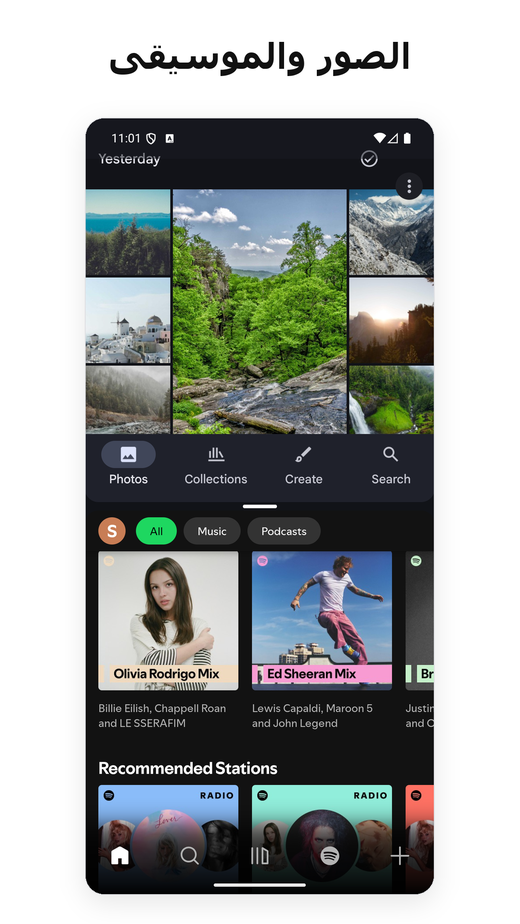
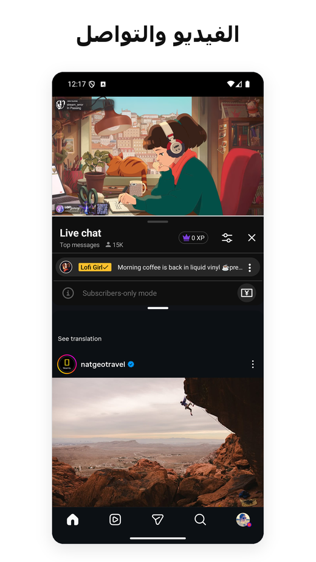
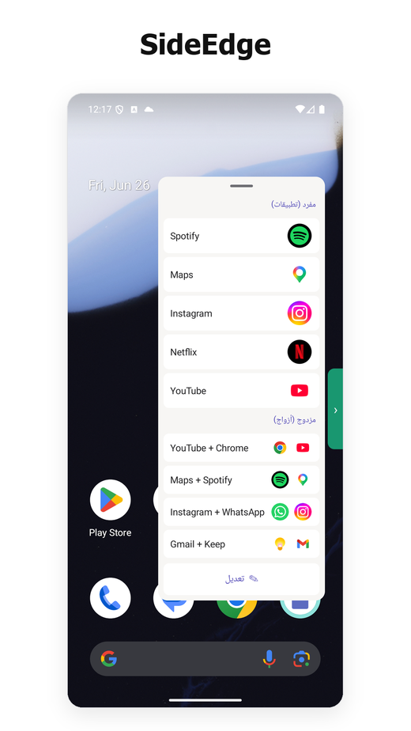
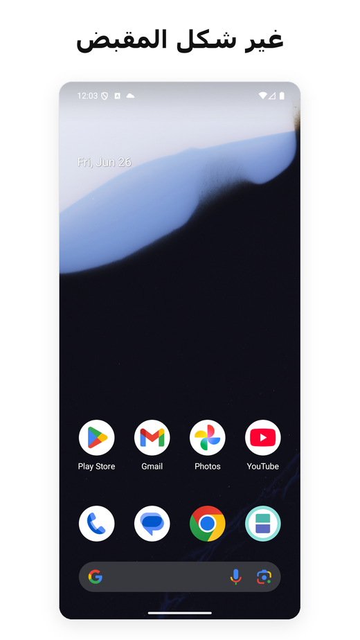

- إحدى الأدوات القليلة لتقسيم الشاشة على Android التي ما زالت تعمل بموثوقية على Android 15 و16 و17.
- توقّفت معظم التطبيقات المنافسة عن العمل عندما غيّرت Google واجهات البرمجة الأساسية؛ أما نحن فواصلنا إصدار التحديثات في كل انتقال حديث لنظام التشغيل.
- لا إعلانات، ولا حاجة للوصول إلى الإنترنت. لا تحتاج نواة الشاشة المقسّمة إلى خدمة إمكانية الوصول على Android 12L فأحدث؛ أما شريط SideEdge الجانبي الاختياري فيستخدمها فقط لإخفاء مقبضه على شاشات تسجيل الدخول/كلمة المرور. خفيف الحجم، وبلا خدمات خلفية.
- الخطة المجانية تغطي الاستخدام الأساسي. اشتراك Pro نحو 1$ شهريًا، أي ما يقارب عُشر أقرب منافس مدفوع.
- ميزة App Pair الأصلية على الهواتف حكر تقريبًا على Samsung — أضافها Android 15 على مستوى النظام، لكن للأجهزة ذات الشاشات الكبيرة فقط، تاركًا هواتف Pixel (وكل هاتف آخر من غير Samsung) خارج النطاق.
- إن كنت على Pixel وتفتقد ميزة App Pair من Galaxy، فهذا أقرب بديل رأيناه.
- الخلفية: لماذا تهمّ «App Pair» على Android
- ما الذي يفعله Split Screen Launcher فعلًا
- SideEdge — شغّل أزواج التطبيقات من أي شاشة
- بديل App Pair من سامسونغ لهواتف Pixel
- مشكلة Android 15/16 — ولماذا توقّف معظم المنافسين عن العمل
- الأذونات والخصوصية
- المقارنة مع تطبيقات تقسيم الشاشة الأخرى
- السعر
- لمن هذا التطبيق (ومن ينبغي له تخطيه)
- الخلاصة
1. الخلفية: لماذا تهمّ «App Pair» على Android
يدعم Android تعدّد المهام في الشاشة المقسّمة منذ الإصدار 7.0 (Nougat، 2016). ما لم يدعمه قط على مستوى النظام هو حفظ توليفات من تطبيقَين وتشغيلهما معًا. أضافت سامسونغ ذلك إلى One UI باسم «App Pair» منذ 2017، ومن ينتقل من Galaxy إلى Pixel يلاحظ غيابها على الفور تقريبًا.
الحل البديل هو تثبيت مشغّل تطبيقات من طرف ثالث يُؤَتمت الخطوتين: فتح التطبيق A، ثم فتح التطبيق B في النافذة المجاورة. يعرض Google Play عشرات التطبيقات من هذا النوع — لكن المنظومة أكثر فوضى مما تبدو، لأن كل إصدار من Android يغيّر طريقة استدعاء الشاشة المقسّمة، ومعظم هذه التطبيقات لا تتلقى تحديثات.
أدخل Android 15 (2024) أخيرًا ميزة App Pair أصلية على مستوى النظام — غير أن Google قصرت نطاقها على الأجهزة ذات الشاشات الكبيرة فقط. حصل عليها Pixel Tablet، أما Pixel 9 Pro فلا. واعتبارًا من منتصف 2026، إليك خريطة المشهد على الهواتف:
- هواتف Samsung Galaxy — ميزة App Pair الأصلية منذ 2017 (عبر Edge Panel)
- هواتف Pixel (الموديلات العادية، لا Tablet ولا Fold) — لا شيء
- Xiaomi وOnePlus وOppo وRealme وVivo وMotorola وNokia وSony وASUS — لا شيء
عمليًا إذن، ميزة App Pair الأصلية على الهواتف حكر على Samsung فقط. وكل من سواها إما يلجأ إلى الشاشة المقسّمة اليدوية في Android (فتح التطبيق، ضغطة مطوّلة على قائمة التطبيقات الأخيرة، سحب، ثم تكرار) أو يثبّت مشغّلًا من طرف ثالث كهذا.
بديل App Pair من سامسونغ لهواتف Pixel و Android النقي
إن انتقلت من هاتف Galaxy إلى Pixel — أو إلى أي هاتف يعمل بنظام Android نقي — وتبحث عن بديل لميزة App Pair من سامسونغ، فهذه هي الفجوة التي بنينا Split Screen Launcher لسدّها. تحصل على السلوك نفسه «تشغيل التطبيقَين جنبًا إلى جنب بنقرة واحدة» دون الحاجة إلى جهاز Samsung أو إلى Edge Panel.
وهو أيضًا أحد الخيارات القليلة التي ما زالت تطبيقًا لتقسيم الشاشة يعمل على Android 15 و16 و17 — دون إعلانات، ودون SDKs للتتبع، ودون إذن إمكانية الوصول لنواة الشاشة المقسّمة على Android 12L فأحدث (شريط SideEdge الجانبي الاختياري هو الاستثناء الوحيد). تعتمد معظم أدوات إقران التطبيقات الأقدم على اختصارات نظام أغلقتها إصدارات Android الحديثة (نتناول السبب في القسم 3 أدناه)؛ أما هذا التطبيق فيصل إلى الشاشة المقسّمة عبر مسار حافظنا على عمله مع كل تحديث للنظام.
2. ما الذي يفعله Split Screen Launcher فعلًا
Split Screen Launcher أداة ذات غرض واحد. تختار تطبيقَين، وتُسمّي الزوج («التنقّل اليومي»، «العمل»، «YouTube + Instagram»)، فيظهر الزوج على شكل صف داخل التطبيق. وبمجرد النقر عليه يُفتح التطبيقان جنبًا إلى جنب.


هذه مجموعة الميزات كاملة حقًا. لا متصفّح مدمج، ولا أدوات عائمة، ولا تكامل مع شريط الإشعارات. التطبيق خفيف الحجم — بضعة ميغابايتات فقط — ولا يشغّل شيئًا في الخلفية.
أمثلة للأزواج التي استخدمناها أثناء الاختبار:
- Google Maps + Spotify — أثناء القيادة
- YouTube + Instagram — شاشة ثانية
- Chrome + Google Keep — بحث مع تدوين ملاحظات
- Gmail + Slack — فرز رسائل العمل
- الآلة الحاسبة + Chrome — مقارنة الأسعار بين علامات التبويب
حالة استخدام لم نتوقّعها: السيارة. أخبرنا أحد المستخدمين أنه يشغّل Split Screen Launcher على وحدة رأس السيارة (Head Unit) بنظام Android في سيارته، فيقرن Maps + Spotify للتنقّل مع الموسيقى — ويبدّل إلى Maps + Netflix لمن يجلس في مقعد الراكب. ولأن تشغيل الزوج يتم بنقرة واحدة، فإنه يناسب وحدة رأس السيارة أكثر بكثير من الضغط المطوّل عبر قائمة التطبيقات الأخيرة.
شغّل أزواجك تلقائيًا — MacroDroid، Automate، Tasker
جاءتنا حالة استخدام أخرى لم نخطّط لها من زاوية مختلفة تمامًا: الدراجة النارية. كان راكب يستخدم التطبيق على جهاز لوحي مثبّت على المقود يريد من أتمتة MacroDroid أن تفتح زوجًا محفوظًا تلقائيًا — ماكرو يُشغَّل بتشغيل المحرّك ليفتح الشاشة المقسّمة دون أي نقرة أثناء القيادة. أصبح هذا الطلب ميزة. منذ الإصدار 3.0.4، يستطيع MacroDroid تشغيل زوج محفوظ عبر منتقي الاختصارات القياسي في Android، فيُطلق الماكرو الشاشة المقسّمة بالطريقة ذاتها التي يُطلق بها أي إجراء آخر. لم نختبر أدوات الأتمتة الأخرى كـ Tasker أو Automate بشكل فردي، لكن بما أن هذه الميزة تعتمد على منتقي الاختصارات القياسي في Android لا على أي شيء خاص بالتطبيق، فمن المرجّح أن تعمل بالطريقة نفسها. إنها ميزة Pro، ومقتصرة على تشغيل الأزواج المحفوظة مسبقًا. إن كنت لا تستخدم أدوات الأتمتة فهذا لن يعنيك — لكن بالنسبة لشريحة المستخدمين الذين يقودون دون استخدام اليدين، فهي تسدّ الفجوة بين «نقرة واحدة» و«بدون نقرات».
الإعداد في MacroDroid
- في الماكرو، أضف إجراءً عبر Action → Applications → Launch Shortcut.
- في قائمة «Select Shortcut»، اختر Split Screen.
- اختر الزوج المحفوظ المحدد الذي تريد تشغيله.
- اربطه بأي مُشغِّل تشاء — اتصال جهاز Bluetooth، توصيل الشاحن، أو وقت محدد من اليوم.
هذا كل ما في الأمر. حين يُطلَق المُشغِّل، يُفتح زوج التطبيقات من تلقاء نفسه تمامًا. على سبيل المثال، يمكنك ضبطه بحيث يُطلق تطبيق مستشعر ضغط الإطارات وتطبيق المكالمات فور تشغيل محرّك سيارتك، أو يُفتح تطبيق الملاحة وتطبيق الموسيقى بمجرد اتصال هاتفك بـ Bluetooth السيارة.


النسخ الاحتياطي والتصدير
تفصيل يسهل إغفاله ويستحق الإشارة: تُصدَّر بيانات الأزواج إلى ملف نسخة احتياطية. يبدو الأمر هيّنًا، لكن عدة تطبيقات منافسة في هذه الفئة تحفظ الأزواج في تخزين التطبيق الخاص دون أي مسار للتصدير — ما يعني أن تبديل الهاتف يعني إعادة بناء كل زوج يدويًا. جعلنا النسخ الاحتياطي والاستعادة ميزة من الدرجة الأولى منذ البداية تحديدًا لكي تستعيد عملية الانتقال من Pixel إلى Pixel المجموعة كاملةً في ثوانٍ.
شاشة رئيسية نظيفة
قرار تصميمي آخر جدير بالذكر مبكّرًا: افتراضيًا، تعيش الأزواج داخل التطبيق — ولا تُنشأ أي أيقونات على الشاشة الرئيسية. السبب جزئيًا للحفاظ على البساطة (الشاشة الرئيسية لا تمتلئ بأيقونات الأزواج)، وجزئيًا لأسباب معمارية — التطبيق غير مرتبط بمشغّل بعينه (Pixel أو Nova أو غيرهما). كما ذُكر في القسم 3، المشغّلات التي تعتمد على الاختصارات هي بالتحديد النوع الذي يتوقّف عن العمل في انتقالات Android 15 و16؛ والبقاء داخل التطبيق يجعل الانتقال بين الهواتف أكثر سلاسة.
يتيح إجراء اختياري لتثبيت زوج على الشاشة الرئيسية لمستخدمي Pro تشغيل الزوج بنقرة واحدة مباشرة من الشاشة الرئيسية. أردنا الحفاظ على الموقف الأصلي «الشاشة الرئيسية بسيطة» مع الاستجابة في الوقت ذاته للحاجة «أريد تشغيل الشاشة المقسّمة مباشرة من أيقونة على الشاشة الرئيسية». تعرض الأيقونة الظاهرة على الشاشة الرئيسية أيقونتي التطبيقَين مرتّبتَين عموديًا، حتى يبقى الزوج متمايزًا بصريًا عن أيقونات المشغّل العادية.
SideEdge — شغّل أزواج التطبيقات من أي شاشة
يضيف الإصدار 3.0 ميزة SideEdge: شريط جانبي تسحبه من حافة الشاشة. يسرد أزواج التطبيقات المحفوظة وتطبيقاتك المنفردة، فتستطيع تشغيل شاشة مقسّمة — أو الانتقال مباشرة إلى تطبيق واحد — من أي شاشة، دون العودة أولًا إلى الشاشة الرئيسية.
إن كنت قادمًا من هاتف Galaxy، فهذا هو الجزء الذي سيبدو مألوفًا لك. كانت Edge Panel من سامسونغ هي الطريقة التي شغّل بها كثيرون أزواج التطبيقات على One UI — لسان على جانب الشاشة ينزلق ليكشف عن درج من الاختصارات. و SideEdge هي رؤيتنا لتلك الفكرة، نقدّمها إلى أي هاتف أو جهاز لوحي يعمل بنظام Android. ليست بديلًا كاملًا عن نسخة سامسونغ، لكنها تمنحك تجربة مشابهة — وعلى غرار بقية التطبيق، فهي بلا إعلانات. إن كنت تبحث عن بديل لـ Edge Panel على Pixel أو Android النقي، فهذه من أقرب الخيارات التي عثرنا عليها.


المقبض العائم الجالس فوق شاشة تسجيل دخول أو كلمة مرور قد يمنعك من الكتابة فيها. لذا يستخدم SideEdge خدمة إمكانية الوصول لمهمة واحدة محددة للغاية — للتعرّف على شاشات الأمان تلك وإزاحة المقبض جانبًا كي تتمكّن من الكتابة، ثم إعادته عند انتهائك. وهو لا يقرأ محتوى الشاشة ولا يجمعه ولا ينقله إطلاقًا. التفاصيل الكاملة في الأذونات والخصوصية أدناه.
لمن هذا التطبيق (ومن ينبغي له تخطيه)
قبل الغوص في الجانب التقني، إليك اختبار ملاءمة سريع يساعدك على تحديد ما إذا كانت بقية هذه المقالة تستحق وقتك.
يناسبك إذا كنت…
- تستخدم التطبيقَين نفسيهما معًا باستمرار (خرائط + موسيقى، بريد + محادثة)
- على Pixel أو Android نقي وتفتقد App Pair من سامسونغ
- تفضّل تطبيقات دون إعلانات أو SDKs للتتبع
- تستخدم Android 12L أو أحدث (لا حاجة لإذن إمكانية الوصول لنواة الشاشة المقسّمة؛ SideEdge وحده يستخدمها)
- تريد شيئًا يظل يعمل عبر ترقيات إصدارات النظام
تخطّاه إذا كنت…
- نادرًا ما تستخدم الشاشة المقسّمة أصلًا
- تريد أداة عائمة أو تشغيلًا بالإيماءات أو أتمتة متقدمة (تتجاوز تشغيل زوج محفوظ)
- تمتلك جهاز Samsung — فميزة App Pair المدمجة في One UI ممتازة بالفعل
- تستخدم واجهة Android مخصّصة بشدّة (MIUI/HyperOS، OxygenOS، ColorOS، MagicOS، EMUI/HarmonyOS) — فهذه الشركات تعدّل الأجزاء الداخلية لتقسيم الشاشة، ولذا يبقى السلوك على تلك الواجهات غير مضمون ويعتمد على الجهاز
ما زال الاهتمام قائمًا؟ يغطي ما تبقّى من المقالة الجانب التقني — لماذا أطاح Android 15 و16 بمعظم البدائل، والقرارات التصميمية خلف نهجنا.
3. مشكلة Android 15/16 — ولماذا توقّف معظم المنافسين عن العمل
هذا هو الجزء الأكثر إثارة، وسبب توقف معظم التطبيقات المنافسة عن العمل.
تاريخيًا، اعتمدت مشغّلات الشاشة المقسّمة على حفنة من واجهات البرمجة على مستوى النظام شدّدتها Google أو أزالتها تدريجيًا. كل إصدار جديد من Android قلّص الأساليب التي تلجأ إليها التطبيقات من طرف ثالث لفتح تطبيقَين جنبًا إلى جنب. أغلق Android 15 و16 بوجه خاص أكثر المسارات شيوعًا. والحيل عبر قشرة النظام تفشل بالطريقة نفسها.
بلغة مبسّطة: «الحيل» التي كانت تعتمدها تطبيقات الطرف الثالث لتحويل الهاتف إلى وضع الشاشة المقسّمة لم تعد تعمل على Android 15 و16. ومعظم تطبيقات هذه الفئة لم يُصدر إصلاحًا.
يصل Split Screen Launcher إلى الشاشة المقسّمة بموثوقية على Android 15 و16 وعلى Android 17 الجديد عبر مسار مختلف. نحتفظ بالآلية الدقيقة لأنفسنا — استغرقنا تجارب كثيرة للعثور على تركيبة تعمل عبر إصدارات النظام، ونشر الوصفة يعني عمليًا تقديمها لكل منافس توقّف عن العمل. ما يمكننا قوله أن سجلّ إصداراتنا يعكس صيانة نشطة عبر انتقالات Android 12 و12L و14 و15 و16 و17، وننوي الاستمرار بهذه الوتيرة.
android:resizeableActivity="false" في ملف manifest — الكاميرا الأصلية و Google Files أبرز الأمثلة — وبدلًا من تكوين زوج، تُفتح وحدها بملء الشاشة (وميزة App Pair المدمجة في سامسونغ تتصرف بالشكل ذاته).
(الحل البديل) تفعيل كلٍّ من
الإعدادات → النظام → خيارات المطوّر → فرض جعل الأنشطة قابلة لتغيير الحجم والسماح بالتطبيقات غير القابلة لتغيير الحجم في وضع تعدد النوافذ يجعل هذه التطبيقات تعمل في الشاشة المقسّمة أيضًا. ضمن صفحة المساعدة داخل التطبيق («كيفية استخدام التطبيقات الموسومة بـ "قد لا تعمل"») شرح خطوة بخطوة.
(تحديث) تتعامل الإصدارات الأخيرة أيضًا مع عدة تطبيقات كانت تقاوم الإقران سابقًا — ومنها Alexa وGoogle Calendar — فصارت تُفتح الآن بشكل صحيح في وضع الشاشة المقسّمة.
4. الأذونات والخصوصية
على Android 12L فأحدث، لا يتطلّب تشغيل الزوج أي أذونات أثناء التشغيل ولا خدمة إمكانية الوصول — إذ يعتمد سير الشاشة المقسّمة الأساسي كليًّا على سلوك نظام Android القياسي. الوصول الإضافي لا يُطلب إلا لميزتَين اختياريتَين تختار أنت تفعيلهما بنفسك.
① التدوير التلقائي لكل زوج على حدة (إذن اختياري) — إن فعّلت هذا الخيار لزوجٍ بعينه، يطلب التطبيق عندئذٍ فقط إذن «تعديل إعدادات النظام» عبر نافذة النظام القياسية. لا يُطلب مسبقًا أبدًا، ولن تراه إلا إذا استخدمت تلك الميزة.
② تفعيل SideEdge (ميزة اختيارية) — يستخدم تشغيل الشريط الجانبي إذنَين اثنين. الأول هو «العرض فوق التطبيقات الأخرى»، كي يظهر الشريط فوق شاشتك. والثاني هو خدمة إمكانية الوصول، وتُستخدم لغرض واحد محدد وذي طابع وقائي: تكشف متى تكون شاشة نظام حساسة نشطة — حقل تسجيل دخول، أو مدير كلمات مرور، أو مطالبة بمصادقة ثنائية، أو تطبيق بنكي — وتُزيح المقبض والشريط تلقائيًا بعيدًا كي لا يجلسا فوق أي إدخال حساس. ولا تقرأ محتوى شاشتك ولا تجمعه ولا تنقله بأي شكل. يبقى كلا الإذنَين مُعطَّلَين تمامًا ما لم تمنحهما صراحةً عبر نوافذ نظام Android.
على Android 9 إلى 12، يحتاج التطبيق إلى إذن خدمة إمكانية الوصول، لأنها واجهة البرمجة الوحيدة المتاحة. تذكر صفحة التطبيق في Play Store صراحةً أن الخدمة تُستخدم فقط لتشغيل وضع الشاشة المقسّمة. قائمة الأذونات التي يعرضها Google Play قصيرة بما يكفي لتقرأها كاملة على شاشة واحدة — لا موقع، ولا جهات اتصال، ولا تخزين، و(بشكل لافت) لا شبكة. هذا وحده أمر غير معتاد في هذه الزاوية من Play Store.
بلغة مبسّطة: لم يكن في إصدارات Android الأقدم واجهة برمجة رسمية لاستدعاء الشاشة المقسّمة، فكانت خدمة إمكانية الوصول المسار الوحيد الممكن. إنه قيد مُوروث، وليس وسيلةً يستخدمها التطبيق لقراءة شاشتك.
للمقارنة، تحزم معظم التطبيقات المجانية لتقسيم الشاشة على Play Store حزم إعلانات (AdMob، Unity، IronSource)، وهو ما يعني أنها تعلن إذن INTERNET ومعه باقة المتتبّعات. اخترنا بدلًا من ذلك تحقيق الدخل عبر اشتراك ضئيل — جزئيًا للحفاظ على بصمة الأذونات نظيفة، وجزئيًا لأن حشو حزم الإعلانات داخل أداة بهذا الصِّغر كان سيضخّم حجمها بشكل كبير.
5. المقارنة مع تطبيقات تقسيم الشاشة الأخرى
قبل جدول المقارنة نفسه، من المفيد رسم المشهد. قُورِبت الوظائف الشبيهة بـ«App Pair» من زوايا عدة:
- تطبيقات خاصة بشركات التصنيع — App Pair من سامسونغ (منذ One UI، 2017)، ومعها صيغ من Xiaomi وOPPO وLG قديمًا. تعمل فقط على أجهزة الشركة المعنيّة.
- أدوات من طرف ثالث — تطبيقات مستقلة مخصّصة لهذه الحالة الوحيدة. معظمها مبنيّ على واجهات برمجة نظام جرى تضييقها أو إزالتها في إصدارات Android الحديثة، ولذا تقلّصت الفئة بشكل ملحوظ.
- مقاربات عبر الأتمتة — Tasker وأدوات مشابهة يمكنها أن تبرمج تشغيل الشاشة المقسّمة، لكنها تعتمد على الأساسيات نفسها التي تعتمدها التطبيقات المخصّصة فترث منها الأعطال نفسها. كما تُلزم المستخدم ببناء كل زوج يدويًا. ومنذ الإصدار 3.0.4 أضفنا طريقة مباشرة للتكامل مع هذه الأدوات: يمكن تشغيل زوج محفوظ من MacroDroid (Pro) دون الحاجة إلى برمجة الشاشة المقسّمة يدويًا. ولأن هذه الميزة تعتمد على منتقي الاختصارات القياسي في Android، فمن المرجّح أن تعمل أيضًا مع أدوات الأتمتة الأخرى كـ Tasker أو Automate، وإن كنّا لم نختبر ذلك من البداية إلى النهاية.
إنّ منظومة تطبيقات الطرف الثالث نفسها مفكّكة. يعرض Google Play عشرات الأدوات المخصّصة لتقسيم الشاشة، لكن النشاط والجودة موزّعان بصورة غير متوازنة.
حصدت التطبيقات الأكثر تنزيلًا في هذه النيش ملايين التثبيتات، ومع ذلك فإن متصدّري الساحة ضعفاء بشكل مفاجئ: فأكبرها يجمع ذلك الانتشار الواسع مع متوسط تقييم متواضع، وثمّة بديل آخر واسع الانتشار آخر تحديث له يعود إلى منتصف 2025، ولم يصدر بعدُ إصلاحًا لتغييرات واجهات الشاشة المقسّمة في Android 15/16. وتلجأ تطبيقات عدة إلى تسعير مرتفع، باشتراكات أسبوعية باهظة قوبلت بانتقادات في مجتمعات المستخدمين.
الأنماط المشتركة في هذه الساحة: معظم التطبيقات إمّا توقّفت عن التحديث في زمن Android 11–12 تقريبًا، أو تُحمَّل بإعلانات بانر وإعلانات بينية مزعجة، أو تشترط إذن خدمة إمكانية الوصول على جميع إصدارات Android (نواة الشاشة المقسّمة هنا تُسقط هذا الشرط على Android 12L فأحدث؛ شريط SideEdge الجانبي الاختياري وحده يستخدمها). هذا ما يجعل الفئة رقيقة على نحو غير معتاد من حيث الخيارات المصانة جيّدًا وذات الأذونات المنخفضة.
تطبيق صغير ومُصان بنشاط وخالٍ من الإعلانات كهذا أمامه طريق سهل للتميّز — شرط أن يعثر عليه المستخدمون.
6. السعر
يحدّ الإصدار المجاني عدد الأزواج المحفوظة ليجرّب المستخدم سير العمل الكامل قبل أن يقرّر ما إذا كان يناسب عاداته. وظائف الأساس — إنشاء الأزواج، تشغيلها، النسخ الاحتياطي/الاستعادة — تعمل كلها دون دفع.
يتكلّف اشتراك Pro نحو 1$ شهريًا حسب المنطقة، ويُزيل حدّ الأزواج، ويضيف تنظيمًا بمجلدات وتخصيصًا لألوان الأيقونات. اشتراك قياسي على Google Play، يمكن إلغاؤه في أي وقت.
للسياق: تتراوح المستويات المتميّزة لأدوات تقسيم الشاشة المدفوعة الأخرى في الفئة نفسها بين دفعة واحدة بقيمة بضعة دولارات وصولًا إلى اشتراكات أسبوعية باهظة. عند 1$ شهريًا، نحن أرخص بمقدار رتبة تقريبًا من أقرب منافس مدفوع.
7. الخلاصة — لمن هذا التطبيق
لمن هو؟ رأي صريح
لا نعتقد أن هذا التطبيق مناسب للجميع. إن لم تكن لديك عادة راسخة لاستعمال تطبيقَين معًا (خرائط + موسيقى، بريد + محادثة، إلخ)، فربما لن تفتحه كثيرًا. أما إن كنت على Android نقي وتفتقد App Pair من Galaxy منذ انتقالك إلى Pixel، فقد صنعناه لك — وحاولنا أن يكون أقلّ الطرق تنازلًا لاستعادة ذلك السلوك. موقف «بدون إعلانات» وسعر 1$ شهريًا خياران مقصودان، ونعتقد أنهما الصحيحان لهذه الفئة.
المزايا
- يعمل فعلًا على Android 15 و16 و17
- لا إعلانات في أي خطة
- خفيف الحجم، بلا خدمات خلفية
- لا إذن إمكانية وصول لنواة الشاشة المقسّمة على Android 12L فأحدث (SideEdge الاختياري وحده يستخدمها)
- لا إعلان لإذن الشبكة على الإطلاق
- خطة Pro بنحو 1$ شهريًا، أرخص بعشرة أضعاف من المنافسين
- نسخ احتياطي / استعادة لانتقال الأجهزة
- تدوير اختياري للشاشة لكل زوج على حدة (مثلًا فرض الوضع الأفقي لزوج فيديو)
- توطين إلى 15 لغة
العيوب
- ثمة تأخير ملموس يقارب ثانية واحدة بين النقر وظهور الشاشة المقسّمة. وهو في معظمه كلفة من جانب النظام — فالدخول إلى وضع التقسيم على Android 12L فأحدث يتضمّن انتقالات عدة للمهام يرتّبها النظام داخليًا، ولذا يقع أي تطبيق في هذه الفئة في نطاق 0.8–1.2 ثانية. ليس خطأً برمجيًا، لكنّه يستحق تنبيه التوقعات
- لا أداة عائمة، ولا ربط بالإيماءات. تشغيل تطبيقات الأتمتة (MacroDroid) مدعوم لكنه مقتصر على Pro ومحدود بتشغيل زوج محفوظ. اختصارات الشاشة الرئيسية أيضًا اختيارية (Pro)، أمّا كل ما عدا ذلك فيبقى داخل التطبيق
- تعرض قائمة إنشاء الأزواج كل التطبيقات المثبّتة دون فئات، وهو ما يصير متعبًا بعد نحو 60 تطبيقًا على الجهاز
- مطوّر فردي، فإن وقعت على حالة حافّة على نظام ROM غير Pixel فلا تنتظر إصلاحًا في نفس اليوم